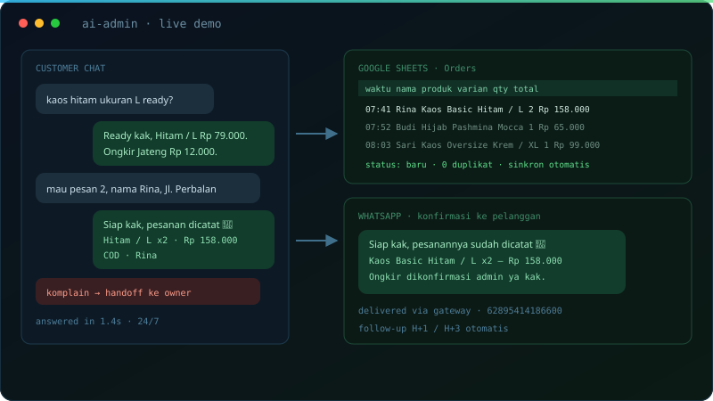

AI Admin: WhatsApp/Telegram Customer-Service Agent
An AI customer-service agent for WhatsApp and Telegram that answers from a CSV catalog, extracts orders from conversation, and escalates to a human when it is not sure.
EXECUTIVE SUMMARY
The agent reads the shop's product catalog as the single source of truth, so every price, stock status and recommendation is grounded in real data rather than invented by the model. It parses natural-language messages to pull out item names, quantities and delivery details, then writes a normalized order row.
When confidence is low — an ambiguous item, missing stock, or a request outside the catalog — the agent stops and hands the chat to the owner instead of guessing. This keeps order records consistent and prevents missed chats outside working hours.
ARCHITECTURE FLOW

Customer message → intent/entity extraction → catalog lookup → order normalization → owner report or human escalation.
PROBLEM
Manual customer service missed messages outside working hours and recorded orders inconsistently, leading to duplicate entries, wrong items, and lost sales.
APPROACH
Use the catalog CSV as the ground-truth knowledge base, guide the buyer through a structured order form in chat, and require explicit human handoff for any ambiguous case.
RESULT
Orders are normalized into a single consistent format, the owner gets a summary report, and ambiguous cases are escalated instead of guessed.